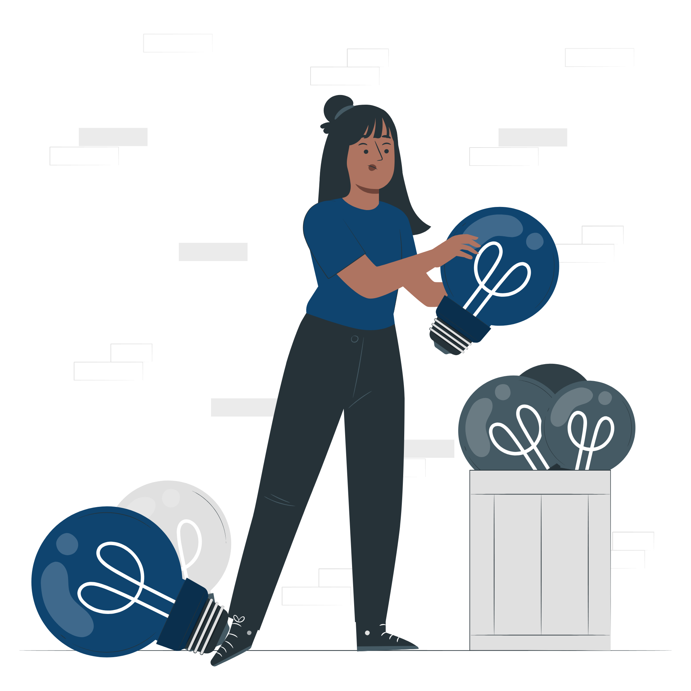
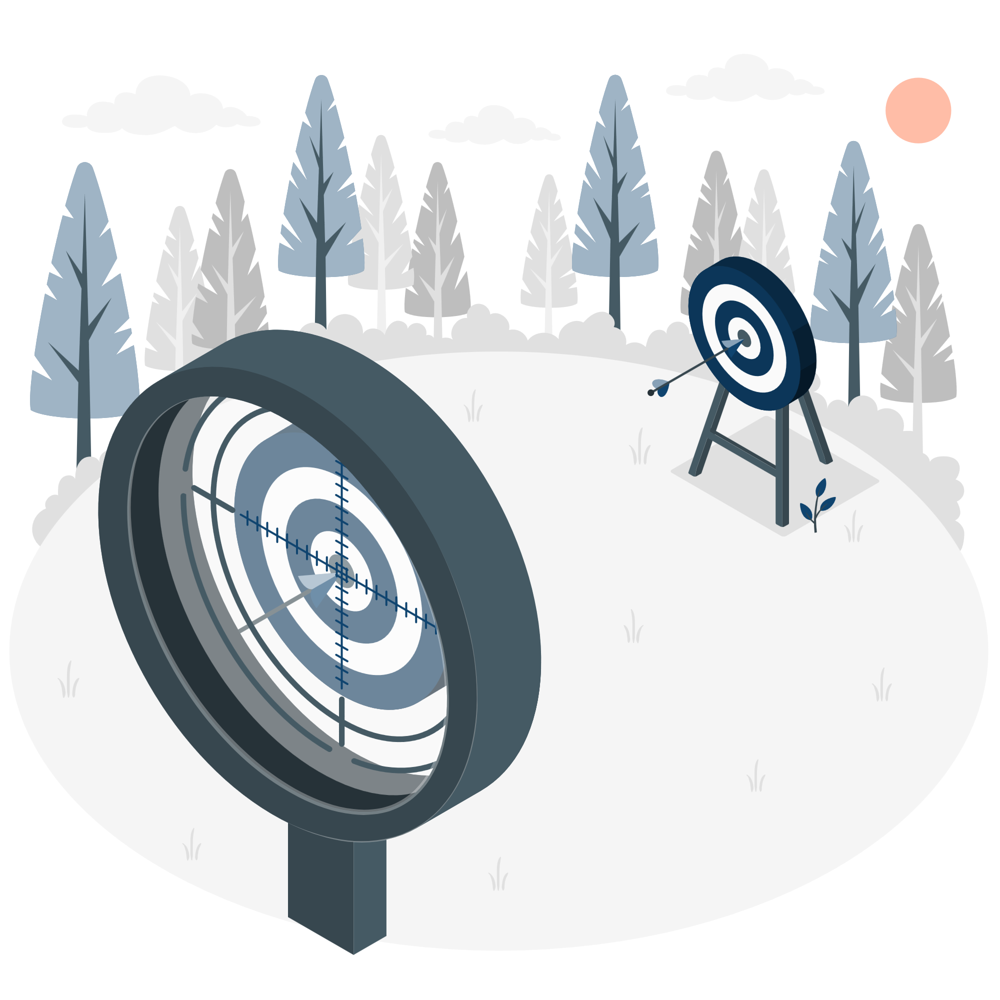

Je m’appelle Élise, et depuis que je suis petite, deux choses me
fascinent : résoudre des mystères… et regarder les étoiles.
Je passais des heures à jouer au Cluedo en imaginant d’autres
décors, d’autres intrigues, d’autres suspects. Et le soir, je rêvais
d’espace, d’exploration et de voyages vers l’inconnu.
Un jour, je me suis posé une question simple :
Et si l’enquête parfaite se déroulait là où personne ne peut
s’échapper ?
C’est ainsi qu’est né Murder in Space — la rencontre entre ma
passion pour le mystère… et l’infini.
À propos du jeu
🡫Qui suis-je ?
La création
Choix du sujet
Réalisation des maquettes

Code pour la version Desktop
Code pour la version Mobile
Intégration du challenge
Design
Le thème de l’espace s’est imposé comme une
évidence. Un huis clos, isolé, sans échappatoire possible — parfait
pour un jeu de déduction.
J’ai ensuite imaginé et conçu toutes les maquettes,
en pensant à chaque détail, aussi bien pour la version
ordinateur que pour la version
mobile. L’objectif était clair : offrir une
expérience immersive, quel que soit l’écran.
Le développement s’est fait en deux temps : d’abord
la version desktop, puis son adaptation mobile, en veillant à
conserver une navigation fluide et intuitive. J’ai également intégré
un challenge interactif pour prolonger l’expérience de jeu au-delà
du simple contenu.
Enfin, j’ai travaillé un design à la fois
accessible, harmonieux et cohérent, afin que chaque page donne la
sensation d’appartenir au même univers spatial.



Mes inspirations
Ma passion pour les enquêtes ne date pas d’hier. Petite, je jouais
au Cluedo avec ma mère, grande collectionneuse
d’éditions spéciales. Chaque boîte racontait une histoire
différente, chaque partie était un nouveau mystère à résoudre. C’est
elle qui m’a transmis le goût de la déduction et du suspense.
En parallèle, je rêvais d’être astronaute. L’espace
représentait l’aventure ultime, l’inconnu, l’infini.
Avec Murder in Space, j’ai simplement réuni ces deux
passions d’enfance : le mystère… et les étoiles.